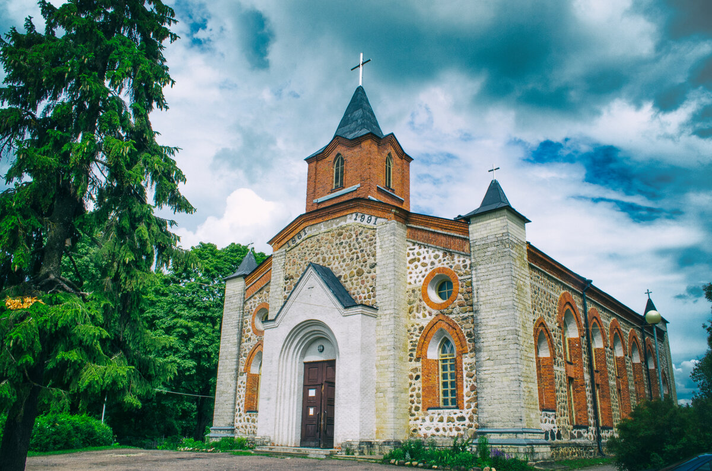

Губаницы - пункт узловой. Перекресток ключевых дорог: - между Таллинским и Киевским шоссе, между Петербургом и Кингисеппом. Не могли его миновать ни завоеватели, ни освободители, ни купцы, ни богомольцы. Свидетелем тому общее братское захоронение жертв второй мировой, гражданской и времен от нас ускользающих в сумраке истории.
Украшением деревни является лютеранская кирха. Ее история начинается с организации религиозной общины в 1647 году. Тогда земля принадлежала Швеции. Первая церковь была возведена в 1704 году. Тот храм, который мы видим сейчас был построен в 1861 году.
В 1937-ом власть храм закрыла, а пасотора расстреляла.
Во время оккупации 1942-го 1943-го службы были восстановлены.
С реставрацией советской власти кирха использовалась как конюшня, тюрьма, пилорама и место всяких безобразий.
В 1988-ом возродилась община, в 1989-ом началось богослужение. Здесь был освещен флаг Ингерманландии. В 1991 году храм восстановили в основном на частные и церковные средства, при поддержке Финляндии и Ингерманландской церкви.
В 1964 году, в рамках Хрущевской компании борьбы с религией, исполнители на местах спохватились, что церковь хоть и закрыта, а крест на месте. Непорядок.
Под предлогом ветхости и риска обрушения решили свалить.
Я был свидетелем как его сбрасывали.
Наше время. Идем с дочкой и внуками.
Рассказываю дочке:
- Пригнали здоровенный гусеничный трактор. Стальным канатом зацепили крест и тащат. Крест не поддается. Трактор дергал-дергал, тужился-пружился. Наконец, закопался гусиницами по кабину. Чуть не обкакался.
Пригнали еще один. Долго дергали двумя, ошалело. Сорвали, к своему удивлению.
Так это было.
И тут, семилетний внук спрашивает:
- Дедуля, зачем ты сказал "трактор обкакался"?